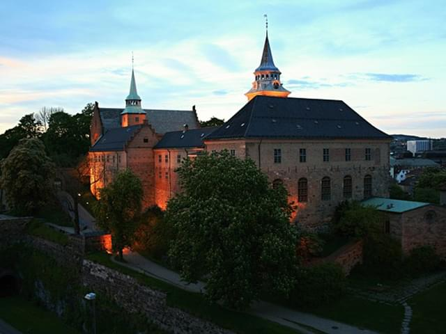
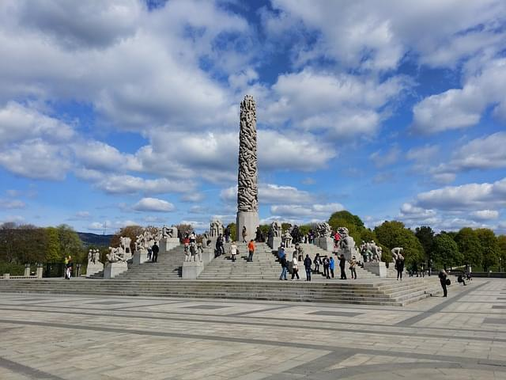

Our Routes
The Royal Palace
The Royal Palace lies in the centrum of Oslo, and are surounded by a huge Park. If you see a flag with the Norwegian coat of arms on top of the roof, it means the King is home.
Oslo Opera House
At Oslo Opera House you can you can look outwards the Oslo fjord from the rooftop. Here you can also enjoy a ballet show, for instance.
Akershus Fortress
Akershus Fortress is a place with great history. Old cannons and a nice view outwards the Oslo fjord is a few of the things you find here.
Barcode

Barcode is an arcitecture project besides the trin station in Oslo. Tag along on a bike to watch the creative buildings.
Frogner Park
At Frogner Park you get to see the many sculptues made by Gustav Vigeland, while wandering around in Oslos largest park.
Oslo Fjord

Tag along on a biking trip to the Oslo Fjord, and enjoy the site of the sun disappearing into the water.